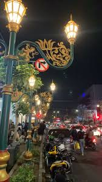
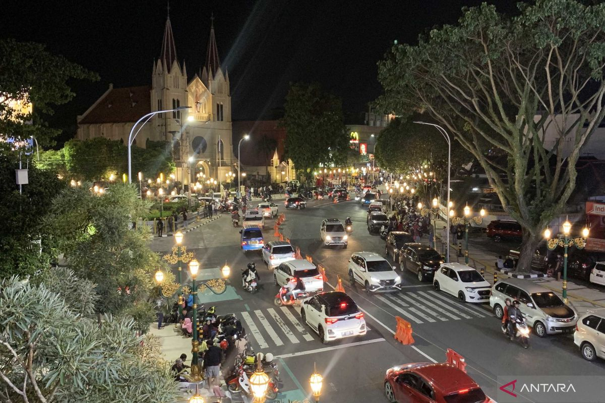

📍Lokasi
Kayutangan Heritage terletak di sepanjang Koridor Jalan Basuki Rahmat, pusat Kota Malang, yang dikenal sebagai kawasan bersejarah dengan bangunan kolonial bergaya art deco. Kawasan ini menjadi ikon kota karena memadukan nilai sejarah, budaya, dan konsep citywalk modern. Letaknya yang berada di jantung kota membuatnya sangat mudah dikunjungi oleh wisatawan maupun warga lokal.


